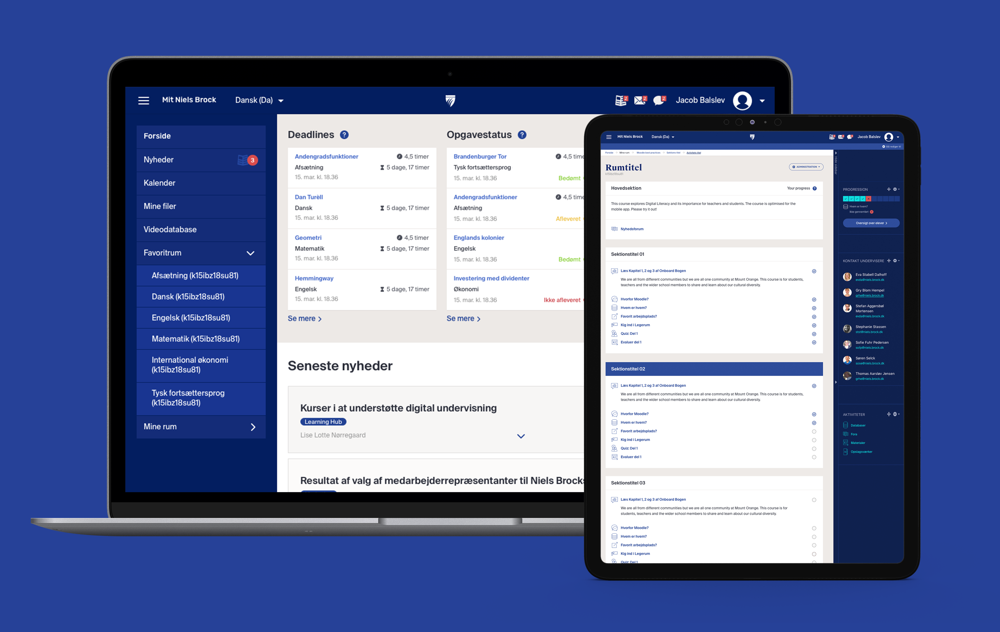
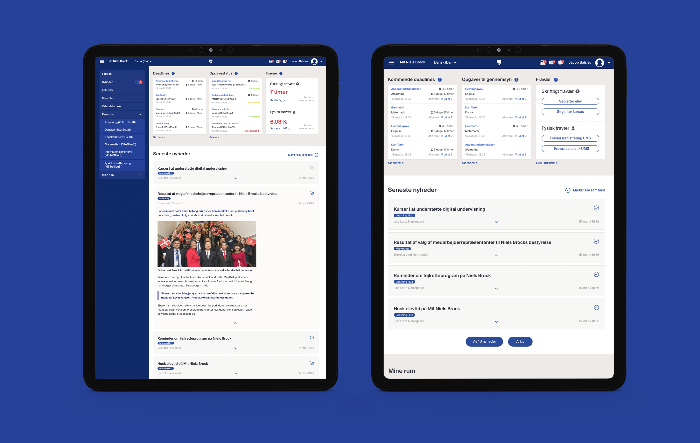
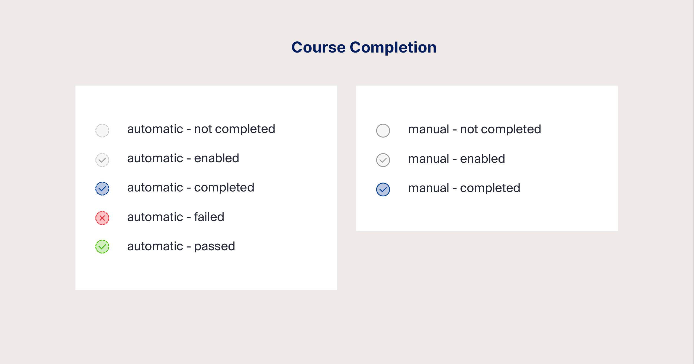
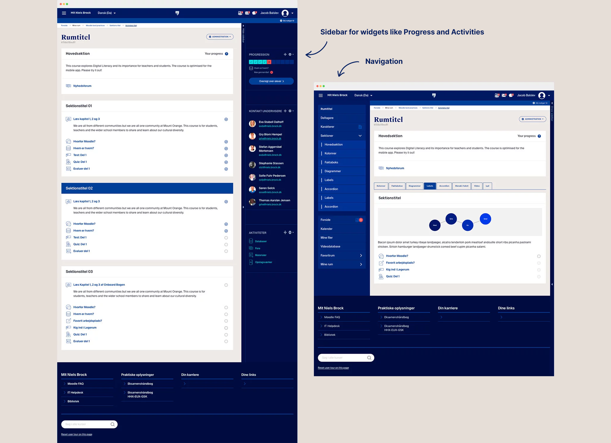
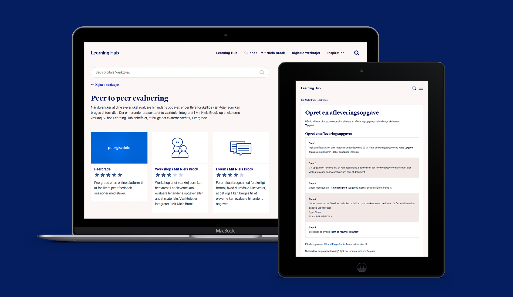

Client
Niels Brock
Learning Hub
Services
UX&UI
WordPress Development
Print
Niels Brock Copenhagen Business College offers a wide range of education programs. Mit Niels Brock is the schools digital classroom and an upgrade is a part of their journey to adjust to a more digital world. I was hired to help with the UX&UI.
Niels Brock use a LMS called Moodle which was developed in 1999. The team from Learning Hub described it as a swiss army knife which indicates there was more to remove than to add in terms of features.

Research and insights
We looked at competitors like Lectio and send out surveys to the teachers and students, made focusgroups and workshops. A chatbot from Intercom was added to the existing website so the students could ask questions and send in requests during the project.One of the pains we discovered was that the teachers reported abscence differently which frustrated the students. Plus they wanted easier acces to data about deadlines and status on assignments. Our solution was to build a Dashboard on the frontpage with a different view for students and teachers.





Onboarding
We made a WordPress site for the teachers to get info on tools in Online Learning to help with onboarding. The site is being curated by the team at Learning Hub with guides and explanation on the different tools.We added the possibility to comment and rate tools from the teachers besides Learning Hubs own rating.
